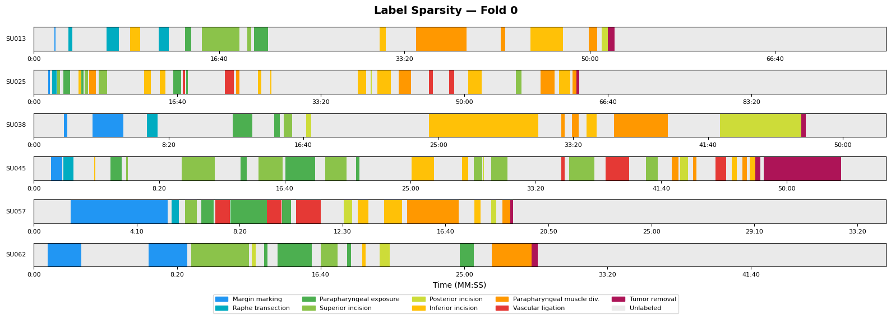
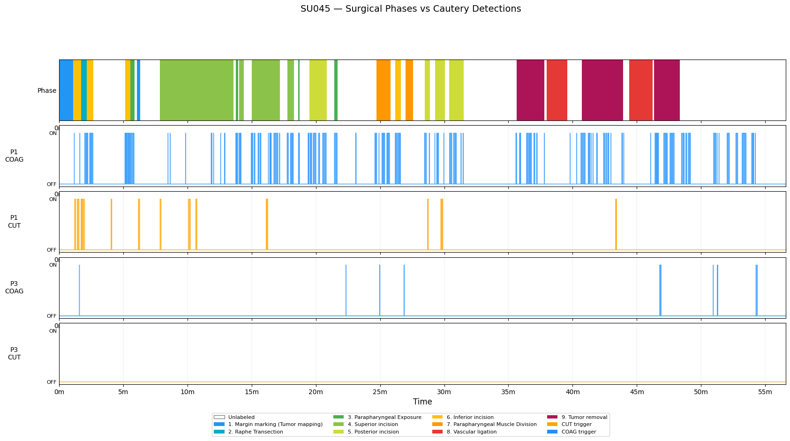
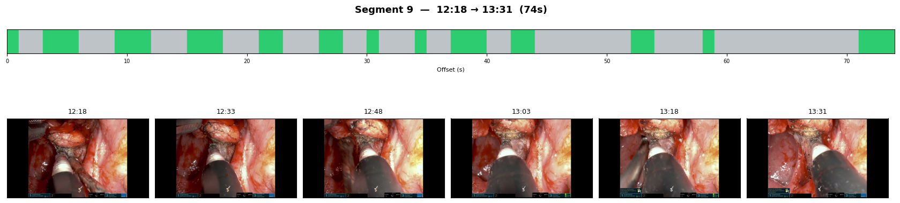
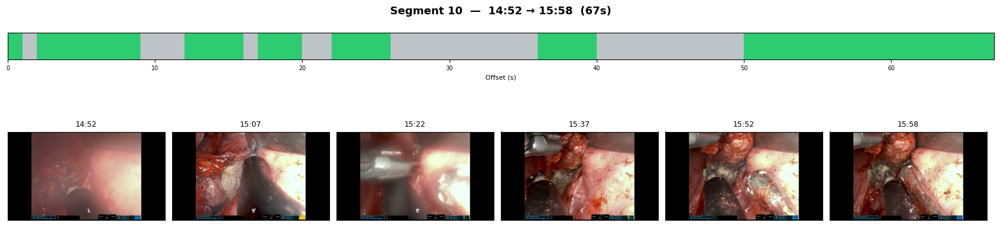
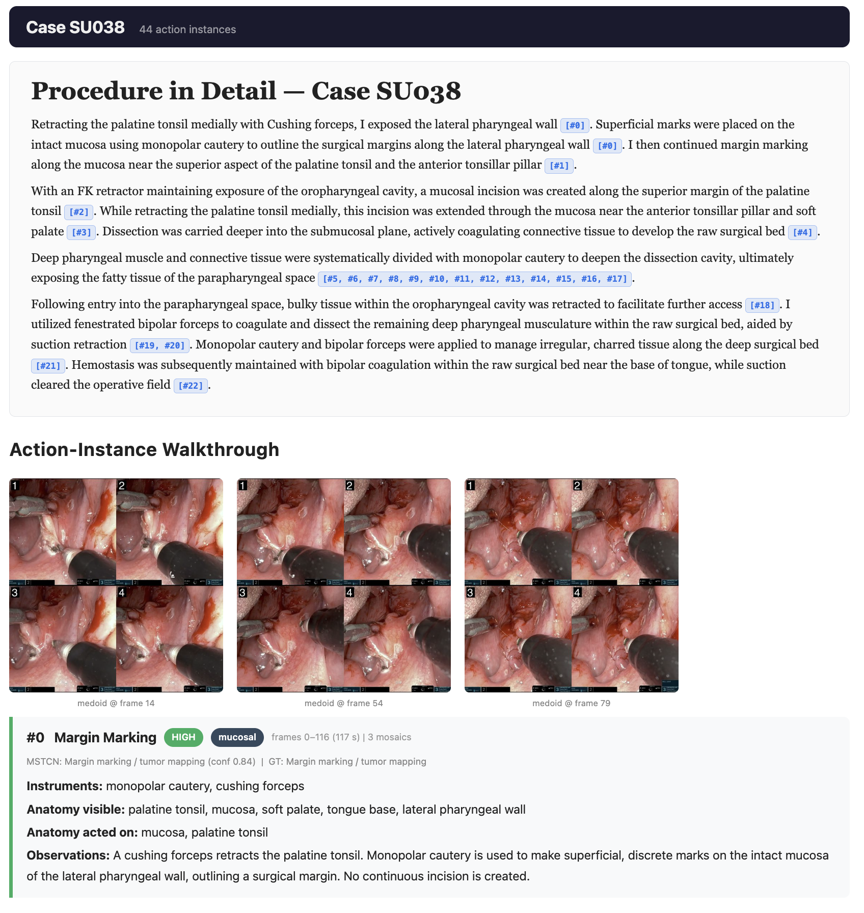

With the adoption of the da Vinci SP at Stanford Medicine, Dr. Holsinger's team faced an ever-growing stream of underutilized high-quality surgical footage. ViGOR is a vision-to-language framework built to automate operative note generation directly from robotic surgical video.
Our team built an MVP that replaces traditional, memory-based dictation with a narrative grounded in visual evidence. Working with the surgical team, we developed a human-in-the-loop interface where clinicians can review generated text directly against the video.
Memory-based operative notes leave room for error and omission. Reconstructing events straight from surgical video ensures the final operative record reflects reality, not recall.
Documentation represents a significant and growing share of a surgeon's non-clinical time. Automating the first draft of an operative note could meaningfully reduce that burden, freeing capacity for direct patient care.
Robotic surgical systems generate immense amounts of stabilized 4K video. While difficult to process manually, this unstructured data provides a highly controlled environment ideal for computer vision.
Our project intitated with 62 de-identified robotic surgical videos and corresponding operative notes created by Dr. Holsinger's surgical team at Stanford. However, many cases featured legacy user interfaces or were missing key procedural elements. To ensure a robust training environment, we implemented a rigorous inclusion criteria, narrowing our scope to 36 standardized cases.
For training, each video was expert-labeled across nine predefined surgical phases. Our initial strategy centered on training a phase classification model. We aimed to utilize a Vision Transformer (ViT) to map frames to one of nine phases. We designed the pipeline to identify these clinical milestones before passing them to a language model for clinical caption generation.
Model development immediately exposed two fundamental data issues. First, expert surgeons labeled only 35% of the video frames, leaving 65% as non-operative "dead time". Second, procedures exhibited non-linear progression, where steps were frequently repeated or skipped. It was clear that a rigid, chronological checklist was insufficient for capturing clinical accuracy.

While observing surgeons, we noticed a consistent pattern: clinical milestones were intrinsically tied to instrument activity. To test this, we built a diagnostic tool to extract signals from the da Vinci’s Head-Up Display (HUD) when cautery pedals were engaged. The data revealed a 90% correlation between these triggers and clinically significant events, allowing us to bypass 65% of the visual noise and focus solely on high-information frames.

Following this insight, we developed an Action Segmentation Tool to group cautery activity. We found a 30-seconds buffer was perfect to account for tool repositioning and brief pauses in activity. The interface serves pre-segmented actions directly to surgeons, eliminating the need to scrub through raw footage. This new approach resulted in a 80% reduction in expert labeling time while also improving inter-rater consistency and accuracy.


First, a Visual Encoder (DINOv3) extracts frame-level features using a
patchwork attention mechanism. We found this model to generalize better to the robotic
endoscopy environment than models pre-trained on datasets like Cholec80.
Second, we use a Multi-Stage Temporal Convolutional Network (MS-TCN) to infer action
segments, creating a structured timeline of video segments. Segments are then passed as
keyframes constructed into mosaics to the language models.
Finally, we constructed two-pass strategy. In Pass 1, the VLM identifies instruments and
actions within each segment to provide key observations. In Pass 2, these observations are
synthesized into a structured operative note.

The human-in-the-loop interface anchors each line of generated text directly to its corresponding video keyframes and mosaics. This allows clinicians to interact with and easily validate the generated narrative against the video evidence before finalizing the report.
ViGOR serves as a successful proof-of-concept for how both computer vision and natural
language processing can be applied to complex industries like medicine, especially in the case
of robotic surgery. The results were highly encouraging, as surgeons graded the generated notes
an
average of 85% when compared to the human-authored notes. In 21% of evaluated cases, the
experts actually rated the generated notes to be equal to or better than the official
dictations.
The success of the project was ultimately enabled by the collaborative relationship we built
with the surgeons. By approaching them as partners rather than stakeholders, we were able to
translate their
clinical expertise into technical solutions and find compelling discoveries in the field.